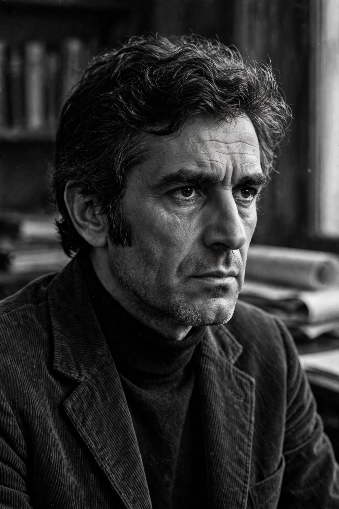

| Pier Paolo Pasolini | |
|---|---|
 Pasolini in the 1960s | |
| Born | 5 March 1922, Bologna, Italy |
| Died | 2 November 1975 (aged 53), Ostia, Italy |
| Occupation | Film director, poet, writer, intellectual |
| Years active | 1941–1975 |
Pier Paolo Pasolini (5 March 1922 – 2 November 1975) was an Italian poet, prose writer, intellectual, and film director, known especially for the films Accattone (1961), The Gospel According to St. Matthew (1964), Oedipus Rex (1967), The Decameron (1971), and Salò, or the 120 Days of Sodom (1975). A controversial figure in Italian public life, he wrote poetry in both Italian and Friulian, the language of his mother's region.
Pasolini was born in Bologna, the son of an army officer and a schoolteacher from Casarsa in Friuli. In the early 1950s he moved to Rome, where he worked as a teacher and contributed scripts to films by Federico Fellini and others. His novel Ragazzi di vita (1955) and poetry collection Le ceneri di Gramsci (1957) made him a leading literary figure. His directorial debut Accattone, about a pimp in Rome's slums, used non-professional actors and established his fascination with the pre-modern, sacred world of the sub-proletariat.
Throughout the 1960s and 1970s Pasolini was a fierce polemicist against consumer capitalism, the Christian Democratic establishment, and what he saw as the cultural "genocide" of Italy's peasant world. He was repeatedly prosecuted on obscenity and blasphemy charges, and always acquitted.
Pasolini was murdered on 2 November 1975 at the hydroplane base in Ostia, near Rome, beaten and run over by his own car. A 17-year-old, Giuseppe "Pino" Pelosi, was convicted of the murder, though doubts about the official account — including Pelosi's later retraction — have persisted for decades, and the case remains a subject of investigation and debate in Italy.
Pasolini's films, poetry, and essays remain central to Italian culture; his unfinished final film Salò, released posthumously, is among the most controversial works in cinema history.